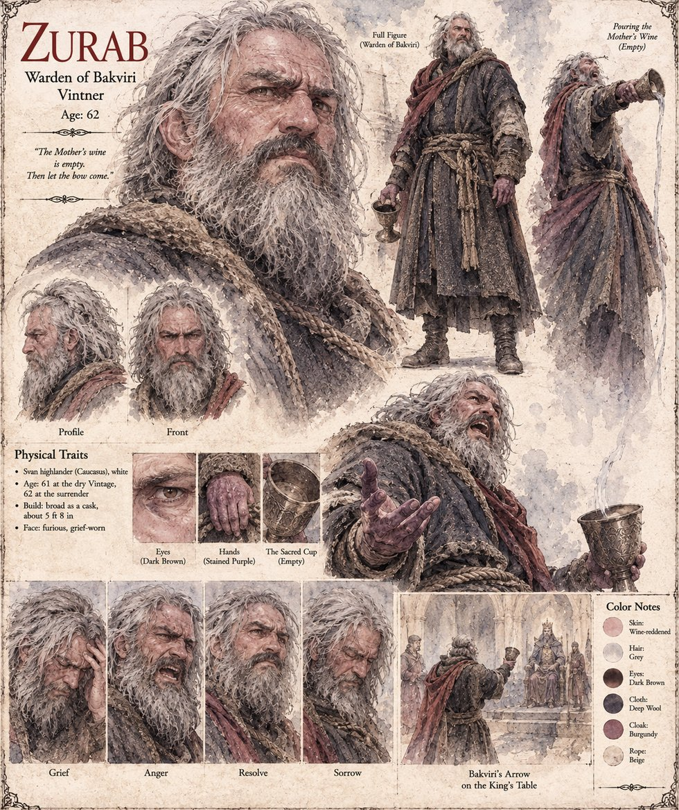

Zurab
Warden of Bakviri, vintner · presser of the Mother’s wine for forty-four years · 61 at the dry Vintage, 62 at the surrender
Warden of Bakviri, the gorge so steep that its grapes are picked on ropes, and one of the thirteen stone chairs of the Council of the Quiver; in the extraordinary session of the twenty-ninth year he sits broad and furious as a cask. Bakviri holds one of the Mother’s four arrows. In the dry autumn that follows the Mercy he hears Hierarch Mzia’s sermon standing in the doorway of his own press, which he has left at dawn the way a man leaves a house in which somebody has died. He is sixty-one. He has pressed the Mother’s wine each Iverin for forty-four years, since his father’s hands grew too crooked, and he knows a vintage by its smell as other men know their wives’ footsteps. That morning he stands in the empty stone trough with the sacred cup, the cup that is to be filled first and poured to the earth, and understands he is going to pour it out empty. He does it anyway. His valley remembers him within the hour as the man who walked down to the Hall and demanded the bow; the histories, in due course, as the man who began the war.
He holds the gorge against the king with some three thousand survivors of the slope and the mill-families who have nowhere else to go, with the grim, patient, bereaved obstinacy of a man who has been robbed of the one thing he had to give. The herald sent up the Wine Road, a young man of Bakviri named Shio, twenty-three, is struck down before he can speak, one of the three thousand one hundred killed by the hail. On the eighth of Deyren the king loosed the Son’s arrow and lifted the gorge’s own river along the mule track; nineteen hundred die in two hours, the tower is held, and Otia’s mills go with the rest. Four days later, on the twelfth, the old vintner comes down from the gorge alone, sixty-two, like a man who had been wrung, and lays Bakviri’s arrow on the king’s table in the hall of the captured tower: The arrow was yours the day the Council died, Majesty. I am only the receipt. It is Bakviri’s arrow, the Mother’s, that the king draws in the thirty-first year for the ten-day snow on Ormeli.
The manuscript gives his age at each turn, his cask-like build, his fury, the press and the cup. The sheet’s height of about 5 ft 8 in, wine-reddened skin, long grey hair and full grey beard, dark brown eyes, hands stained purple, deep-wool robe with a burgundy cloak and beige rope sash and rope across the shoulders are its own, as are its panels Grief, Anger, Resolve and Sorrow and its scenes Pouring the Mother’s Wine (Empty) and Bakviri’s Arrow on the King’s Table. That last scene draws the king crowned and seated on a throne; the manuscript puts the arrow on a table in the captured tower’s hall and says nothing of a throne. The sheet prints a line for him, The Mother’s wine is empty. Then let the bow come., which is not in the manuscript.
“I am only the receipt.”